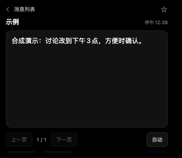

你的 Mac 顶部，多一个工作伙伴
飞书、Agent，
都在灵动岛。
材料交给 AI，手头工作继续。
消息、进度和结果，抬眼就能看见。
Apple M 系列 · macOS 15+ · 0.8.0 build 49
下载已开始。打开 DMG，把工作岛拖进 Applications。
在这里试一下软件原生组件 · 合成内容

鼠标放到顶部展开，移开收回。消息以白字描边飘过桌面。
宰治 × 柚子 · 共同发布看看怎么用 ↓
从随手一放，到拿到结果
少切几个窗口。
多做一点正事。
飞书消息、材料处理、待办和 Agent 状态，放到同一个入口。需要时展开，鼠标移开就收回。
- 01
放下材料
文字 · 链接 · 图片 · 文件
拖进灵动岛，或直接输入、粘贴截图。先存待办，也可以直接归档。
- 02
交给常用的 AI
Dot · Codex · 豆包工作 · WorkBuddy
选择工具，再点“交给 AI”。继续做其他事，完成或需要你确认时再提醒。
- 03
结果回到飞书
云文档 · 追加收录 · 多维表格
按你选择的位置归档，文档链接回到岛内。接入的是你自己的账号和权限。
安装，只留三步
把工作岛，
放上你的 Mac。
- 01
打开 DMG
下载后，在浏览器下载列表中打开。
- 02
拖入 Applications
一个应用，一个拖入目标。安装就这些。
- 03
连接自己的账号
按工作台提示授权，不用填写应用密钥。
已经安装？打开本机工作台 ↗
需要时，再看。
第一次怎么连接？
在工作台“中台与飞书 → 账号与消息”连接自己的飞书，消息接收与材料归档分别授权。Dot 需连接自己的项目；不会复制开发者的账号。需要协助，点首屏“复制交给 Agent”。
查看连接说明网页收录、提醒和外观在哪里？
打开完整工作台，可设置网页收录、中台卡片、提醒和外观。WorkBuddy 自动签到在“Agent → 接入与签到”开启，使用自己的账号，首次需本人允许签到组件的系统权限。
查看使用说明旧版更新，或首次打不开？
先退出旧工作岛，再替换应用，不用退出飞书。旧版本可能仍叫“飞书工作岛预览版”。当前包尚未完成 Apple 公证；如遇系统来源提示，使用 macOS 提供的确认入口，不关闭安全保护。Windows 和 Intel Mac 暂不提供安装包。
查看安装帮助